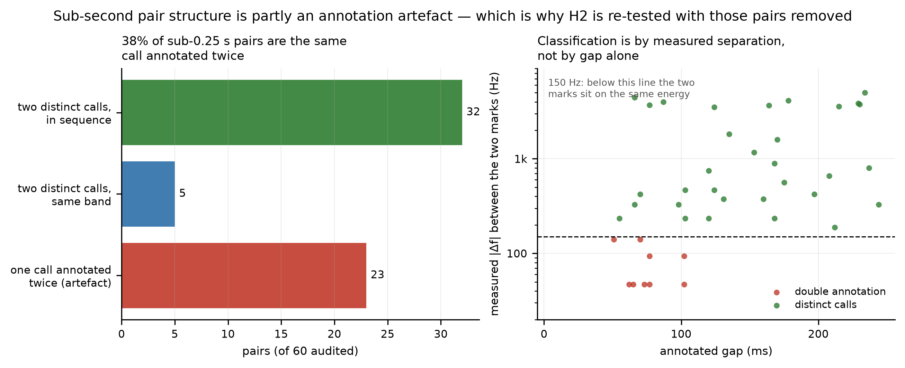
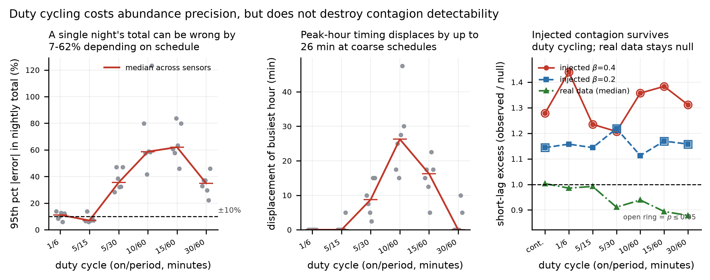

Seconds-Scale Social Contagion in Nocturnal Flight Calls: A Calibrated Bound from Passive Acoustic Monitoring
Summer 2026 · Self-directed
Project Overview
Migrating songbirds call through the night, and captive work has established that they call more readily in response to conspecifics than to other species (Hamilton 1962; Morris et al. 2016). This project asked whether the seconds-scale signature of that behaviour, one bird answering another within a few seconds, is recoverable from wild passive acoustic monitoring data. The material was BirdVox-full-night: 62 hours of continuous audio from six autonomous units near Ithaca, New York, in which 35,402 avian flight calls were pinpointed in time and frequency by Andrew Farnsworth working in Raven, an annotation effort of 102 hours.
The pre-registered test rejected its null in all six sensors at Fisher p = 4.9 × 10⁻⁹. That rejection is an artefact of the null model, and the substance of this project is the work that established as much. Two implementations of the same pre-registration were written independently, using deliberately different algorithms, so that agreement would be evidence about the data rather than about a shared bug. They reached opposite verdicts, and were then adjudicated against series whose true answer was known by construction.
Process
- Fixed the hypotheses, null models and the one irreducible confound in writing before obtaining the annotations, namely that a single microphone cannot distinguish one bird calling repeatedly from two birds answering each other.
- Built a validation gate of 47 tests including 8 deliberate false-positive traps, each a case constructed to make a naive method claim an effect that is not present. The gate caught four genuine errors before they reached a claim, one of which had already contaminated a reported number.
- Ran two independent implementations of the same brief and, on finding they disagreed, resolved the disagreement by measuring each estimator's bias against no-contagion series rather than by preferring either codebase.
- Verified the novelty claim against the published literature after the analysis was complete. The claim did not survive, and the framing was narrowed from a first test to a replication with an added methodological diagnostic.
Method
- Call times were compared against inhomogeneous-Poisson surrogates drawn from a kernel-smoothed estimate of the local calling rate, then the same comparison was repeated across a bandwidth ladder from 30 s to 2400 s to test whether the result depended on that smoothing choice.
- The discriminator was calibrated against injected Hawkes contagion of known branching ratio, so that the disappearance of an effect could be distinguished from a null model absorbing it.
- Frequency assortment between temporally near calls was tested against permutations with an explicit timescale, each frequency redrawn from calls within a bandwidth window, after the same monotonicity that defeated the temporal test appeared in the stratum-count sweep.
- Annotations were verified against an independent short-time Fourier transform measurement with a noise-calibrated detection floor, and duty-cycled recording schedules were simulated across 24 randomised cycle phases each.

Result
- The pre-registered positive does not survive. Excess ratios are 1.02 to 1.15 while every p sits at the empirical floor, so the test reports surrogate variance rather than effect size. The recovered timescales are 20 to 167 s, an order of magnitude too long for a call-and-response kernel, and excess persists to the edge of the 90 s window.
- Injection recovery converts the negative into a bound. Branching ratios of β ≳ 0.4 are excluded on each sensor's own call series, β ≈ 0.2 sits at the edge of what these methods resolve, and β ≲ 0.1 lies below the noise floor. This states what the data can rule out rather than only what it failed to detect.
- The two implementations disagree by more than the signal at the boundary of the bound. Across all six sensors at a 60 s null the spread between them is 0.108, while a β = 0.2 injection lifts the statistic by only 0.059 on average. A β = 0.4 injection lifts it considerably further and stays detectable, which is why 0.4 is excluded and 0.2 is not.
- The disagreement was localised by substitution rather than by argument. Exchanging one component at a time on one sensor at a 30 s null moves the result by 0.002 when the surrogate draw is swapped and by 0.12 when the rate estimator is swapped, so the rate estimator carries almost the whole difference. These are separate measurements taken under different conditions from the 0.108 figure above and are not its components.
- Bias calibration corrects both and reconciles neither. Against ten no-contagion replicates with a true ratio of exactly 1.000, one estimator is biased high by 0.242 at a 600 s bandwidth and the other low by 0.020 at 60 s, the direction that manufactures a negative. After correcting both, a residual gap of 0.076 remains that no measured bias explains.
- One finding survives every bias above. A triggering process must be maximal as lag approaches zero, and no seconds-scale kernel peak appears in the pair correlation function at any bandwidth in either implementation. This is the strongest evidence against contagion as a mechanism, and it does not rest on the contested excess ratios.
- Spectral assortment is partially supported. At the tightest null with demonstrated power, a residual of about 5 per cent survives (effect 0.951, p = 1.2 × 10⁻³) against the 15 to 17 per cent that the pre-registered null reports. Most of the apparent assortment is minutes-scale composition. This result has not been audited across implementations the way the temporal result was, so it carries no equivalent uncertainty estimate.
What This Means
The calls bunch together, but the bunching looks like traffic rather than conversation. Birds cross a microphone in waves over minutes, and that alone accounts for the apparent clustering. If birds were answering one another, the effect would be strongest at the shortest delays and would fade within seconds. Instead the recovered timescales are 20 to 167 s, far too slow for a reply, and no peak appears at short delay in either implementation.
The analysis puts a ceiling on how much answering could be happening. Adding artificial call-and-response of known strength to the real recordings shows what the method would have caught. If more than roughly four calls in ten were triggering a further call, it would have been visible on this night. That much is ruled out. Anything weaker is not, and saying so is the honest limit of a single microphone.
Calls close together in time are slightly more alike in pitch, by about five per cent. Because species tend to call in different frequency ranges, this suggests that birds calling near each other in time are often the same kind of bird. Three explanations fit that observation equally well from one microphone: they are travelling together, they are answering one another, or one bird called twice. Work using a three-dimensional array that can locate individual birds found that similar sounding species do fly closer together (Gayk and Mennill 2023), which makes travelling together the most economical reading of a five per cent effect.
For monitoring programmes, the recording schedule matters more than it might appear. Saving battery by recording ten minutes in every hour can misstate a night's total by around sixty per cent and move the apparent peak of migration by roughly half an hour. Nocturnal flight call monitoring informs decisions such as when to dim building lights or curtail turbines during heavy migration, so an hour's error in the peak is a practical cost rather than a statistical footnote.
For anyone reusing these annotations, the closest call pairs need care. Around thirty-eight per cent of pairs separated by less than a quarter of a second are one call marked twice. That has almost no effect on counting migrants, which is what the dataset was built for, and a large effect on any question about the timing between calls, which is what this project asked.
Annotation Verification
300 annotations were sampled at random from the densest sensor and re-measured against an independent spectrogram estimate, itself validated against synthesised calls of known centre time and frequency before any annotation was judged. Detectable energy was found at 80.3 per cent of annotated positions, with the 59 non-detections clustering just below the detection threshold at a median peak signal-to-noise ratio of 14.6 dB against a 16 dB floor. These are faint calls that an expert heard and a conservative automatic threshold rejects.
Timing agrees closely, at a median absolute difference of 21 ms. Centre frequency does not, at a median absolute difference of 225 Hz with a consistent positive offset of 82 Hz. A centre frequency placed by eye in Raven is not defined to equal a spectral peak, so the offset is a definitional difference rather than an error rate, and the scatter around it is the quality-control signal. 143 of the 300 were exported as a Raven selection table for human review.

Annotated Frequency Is Quantised
| Unit | Distinct values | Calls | Modal step (Hz) |
|---|---|---|---|
| unit01 | 446 | 2,926 | 24 |
| unit02 | 540 | 4,730 | 23 |
| unit03 | 139 | 9,113 | 79 |
| unit05 | 185 | 5,264 | 39 |
| unit07 | 282 | 6,530 | 19 |
| unit10 | 186 | 6,839 | 98 |
Annotated centre frequency is quantised, and to a different step in every unit. unit03 records the most calls and the fewest distinct values, a zoom and readout artefact of the annotation session rather than a property of the birds. The consequence is statistical: a median-based frequency statistic returns exactly 1.000 for three of the six sensors, so the mean is used throughout for effects of this size.
Consequences for Monitoring Design
Field deployments record on a duty cycle to conserve power, and nightly totals are then scaled by the duty fraction. Simulating standard schedules over the continuously recorded night shows that this correction is close to unbiased on average while remaining unreliable for any single deployment.
| Schedule (on / period, min) | Duty | Mean error | 95th pct absolute error | Peak-hour shift |
|---|---|---|---|---|
| 1 / 6 | 0.17 | +0.0% | 11% | 0 min |
| 5 / 15 | 0.33 | −0.1% | 7% | 0 min |
| 5 / 30 | 0.17 | −2.1% | 35% | 9 min |
| 10 / 60 | 0.17 | −9.4% | 59% | 26 min |
| 15 / 60 | 0.25 | −1.6% | 62% | 16 min |
| 30 / 60 | 0.50 | +3.7% | 35% | 0 min |
Median across the six sensors, 24 random cycle phases per schedule. A five-minute window in every thirty is near-unbiased on average and wrong by 28 to 47 per cent at the 95th percentile on a single deployment. Coarse schedules also displace the apparent migration peak, by 26 minutes at the median and by up to 160 minutes on one sensor.

Relation to Published Work
The pre-registration claimed that no published work tests seconds-scale call contagion or spectral assortment in wild passive acoustic data. That claim did not survive checking and the framing was narrowed accordingly. Van Doren et al. (2025) tested cross-species co-occurrence in more than 18,000 hours of recordings across 27 species, using a 30 s association window with 15 s and 60 s as robustness checks. Gayk and Mennill (2023) tested spectral assortment directly and positively using a three-dimensional microphone array that localises individuals, which is the instrument a single-microphone design lacks. Hawkes self-excitation has already been applied to right whale counter-calling and to bat echolocation buzzes.
The central statistical result is also not new, and it is worth naming precisely. The confounding of first-order rate structure with second-order clustering is long established in spatial statistics, where it is treated as a question of whether intensity and interaction are separately identifiable at all (Diggle et al. 2007; Gabriel 2014; Baddeley et al. 2000). The same problem is standard in spike-train analysis, where slow rate covariation is known to produce correlogram peaks resembling precise timing, and where the smoothing scale is declared as part of the null hypothesis rather than treated as a nuisance (Brody 1999; Grün 2009). In the Hawkes setting specifically, a nonstationary background is known to inflate the estimated branching ratio (Filimonov and Sornette 2015). Duty-cycle bias in passive acoustic monitoring is likewise established, including the finding that subsampling penalties are worst for temporally clustered vocal activity (Thomisch et al. 2015; Rand et al. 2022).
Tooling and Provenance
This project was built with AI assistance. The two implementations described above were produced by two separate agent sessions working the same written brief without access to each other's code, which is why their disagreement is informative about the analysis rather than about a shared bug. The hypotheses, the decision to treat that disagreement as the headline result, and the choices about what to report and what to withhold are mine. Statistical primitives were written directly on NumPy and SciPy rather than taken from an existing package; established implementations of the same mathematics exist in spatstat, tick and elephant, and are noted here as prior art rather than as dependencies.
Limitations
The data cover one night at one location, so night-specific weather and species composition are inseparable from the result. A single microphone cannot establish individual identity, and the gap convention used in monitoring work to separate individuals cannot help here: it splits passages at 60 to 300 s, whereas the pairs under test are separated by 5 s or less, so every tested pair falls inside one passage by construction. Only 0.03 to 1.09 per cent of calls are isolated at a 60 s gap. The surviving assortment residual is therefore consistent with call-and-response, with same-species birds travelling together, and with one bird calling twice, and it does not choose between them. Only centre frequency was available, with no bandwidth, duration or modulation, and that one dimension is coarsely quantised. The negative temporal result is a bound rather than proof of absence: β ≳ 0.4 is excluded on this night, while β ≈ 0.2 remains unresolved because two independent implementations disagree by 0.076 where that injection produces only 0.059.
Methods & Tools
Data & Sources
Audio and annotations: Lostanlen, V., Salamon, J., Farnsworth, A., Kelling, S. & Bello, J. P., BirdVox-full-night, Zenodo record 1205569, DOI 10.5281/zenodo.1205569, CC BY 4.0. Six ROBIN recording units, 24 kHz mono, roughly 10.9 hours per unit, near Ithaca, New York, 23 September 2015; 35,402 flight calls annotated in Raven by Andrew Farnsworth. Dataset described in Lostanlen et al. 2018, ICASSP. Cross-species co-occurrence after Van Doren, B. M., DeSimone, J., Firth, J. A., Hillemann, F., Gayk, Z., Cohen, E. & Farnsworth, A. 2025, Current Biology 35(4):898–904. Spectral assortment with three-dimensional localisation after Gayk, Z. & Mennill, D. 2023, Philosophical Transactions of the Royal Society B 378:20220114. Raven Pro, K. Lisa Yang Center for Conservation Bioacoustics, Cornell Lab of Ornithology. Flight-calling behaviour after Hamilton, W. J. 1962, The Condor 64(5):390–401, and Morris, S. R., Horton, K. G., Tegeler, A. K. & Lanzone, M. 2016, Animal Behaviour 114:241–247. On the identifiability of intensity and interaction in point processes: Baddeley, A., Møller, J. & Waagepetersen, R. 2000, Statistica Neerlandica 54(3):329–350; Diggle, P. J. et al. 2007, Biometrics 63(2):550–557; Gabriel, E. 2014, Methodology and Computing in Applied Probability 16(2):411–431. On rate nonstationarity in correlation analysis: Brody, C. D. 1999, Neural Computation 11(7):1537–1551; Grün, S. 2009, Journal of Neurophysiology 101(3):1126–1140. On branching-ratio inflation under a nonstationary background: Filimonov, V. & Sornette, D. 2015, Quantitative Finance 15(8):1293–1314. On duty-cycle subsampling in passive acoustic monitoring: Thomisch, K. et al. 2015, JASA 138(1):267–278, and Rand, Z., Wood, J. & Oswald, J. N. 2022, JASA 151(3):1651–1660.